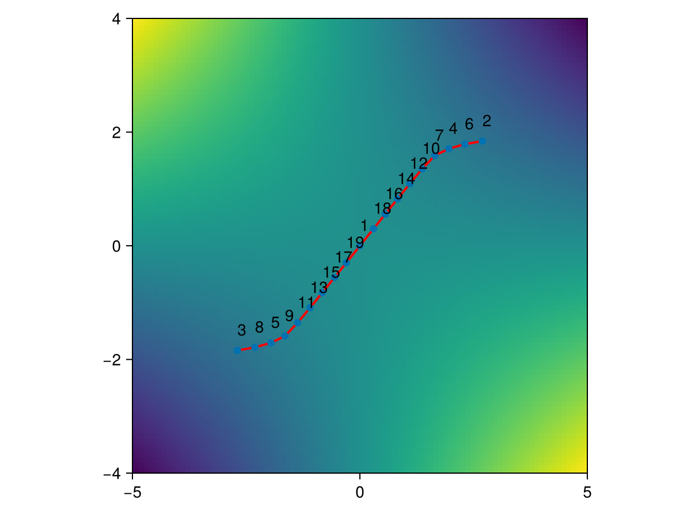
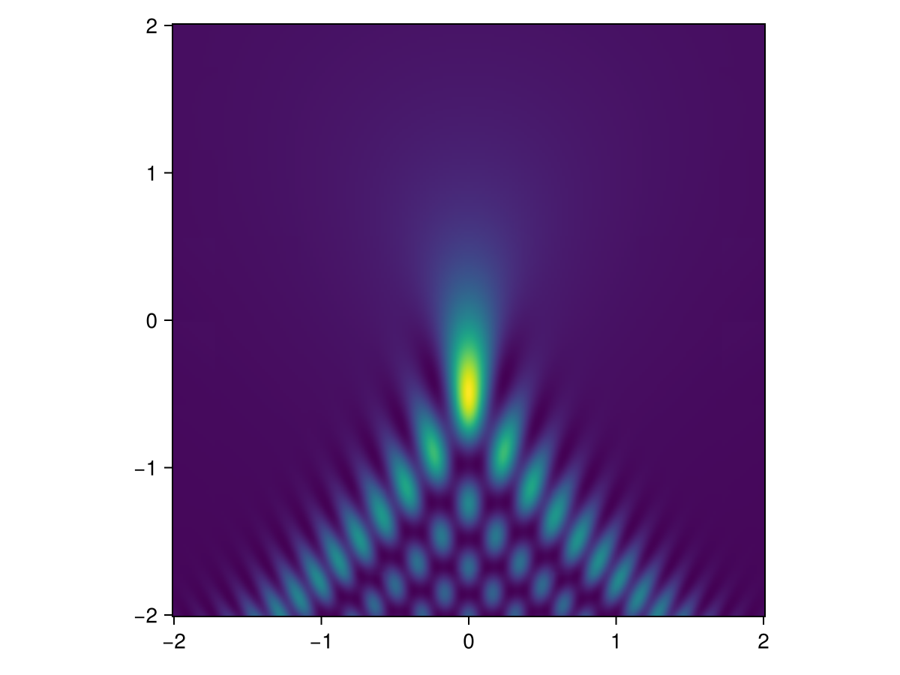
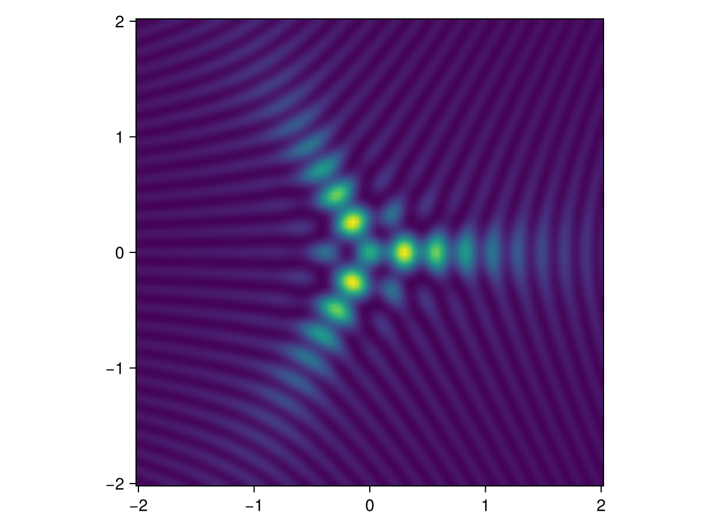

Tutorial
In this tutorial, we demonstrate the usage of the PicardLefschetzIntegration.jl.
Fresnel integral
Let us first consider the Fresnel integral
\[I = \int_{-\infty}^\infty e^{i x^2}\mathrm{d}x = (1+i)\sqrt{\frac{\pi}{2}}\]
The integral has a single critical point at $x = 0$. The associated Lefschetz thimble is the diagonal contour
\[\mathcal{J}=(1+i)\mathbb{R}.\]
using PicardLefschetzIntegration, CairoMakie, Makie.GeometryBasics
function linePlot(S, thim::thimble)
filter!(sim->sim.active, thim.simplices)
lines = reduce(vcat, [[Point2f(real(thim.points[i].coord[1]), imag(thim.points[i].coord[1])) for i in sim.coord] for sim in thim.simplices])
vertices = stack(map(p -> p.coord, thim.points), dims=1)
fig = Figure()
ax = Axis(fig[1, 1], aspect=1)
heatmap!(ax, LinRange(-5, 5, 100), LinRange(-4, 4, 100), [real(im * S([u + im * v])) for u in LinRange(-5, 5, 100), v in LinRange(-4, 4, 100)])
linesegments!(ax, lines, linewidth=2, color=:red)
scatter!(ax, real.(vertices[:]), imag.(vertices[:]))
for i in 1:length(thim.points)
text!(ax, real(vertices[i]), imag(vertices[i]) + 0.2, text = string(i))
end
limits!(ax, -5, 5, -4, 4)
return fig
end
pars = parameters(δ = 0.5, τ = -10., ϵ = 0.1, N = 20, n = 5, dim = 1)
thim = initialGrid([-4], [4], pars)
S(p) = p[1]^2
flow(S, thim, pars)
linePlot(S, thim)
The integral evaluates to $(1+i)\sqrt{\pi/2}$
PL_integrate(S, thim, pars)1.2533126304104458 + 1.2533285739627602imPearcey integral
The Pearcey integral
\[I = \int_{-\infty}^\infty e^{i \omega(t^4 + x_2 t^2 + x_1 t)}\mathrm{d}t\]
is the canonical diffraction integral associated with the unfolding of the cusp catastrophe. We evaluate the thimbles on a coarse lattice in $x_1$ and $x_2$
using PicardLefschetzIntegration, ProgressMeter, Base.Threads, CairoMakie
pars = parameters(δ = 0.5, τ = -10., ϵ = 0.1, N = 50, n = 5, dim = 1)
S(p, x₁, x₂, ω) = ω * (p[1]^4 + x₂ * p[1]^2 + x₁ * p[1])
aRange_L, bRange_L = range(-2., 2., 8), range(-2., 2., 8)
thimbles = Array{thimble}(undef, length(aRange_L), length(bRange_L));
let ω = 1
@showprogress Threads.@threads for (i, j) in collect(Iterators.product(eachindex(aRange_L),eachindex(bRange_L)))
x₁, x₂ = aRange_L[i], bRange_L[j]
thim = initialGrid([-4], [4], pars)
flow(p -> S(p, x₁, x₂, ω), thim, pars)
thimbles[i, j] = thim
end
end
map(t->length(t.simplices), thimbles)8×8 Matrix{Int64}:
16 13 13 13 16 13 15 9
23 14 15 13 14 15 10 9
22 21 16 15 16 16 10 9
23 23 25 14 17 8 8 8
23 23 25 14 17 8 8 8
22 21 16 15 16 16 10 9
23 14 15 13 14 15 10 9
16 13 13 13 16 13 15 9Next, we evaluate the integral on a fine lattice in $x_1$ and $x_2$
aRange, bRange = range(-2., 2., 200), range(-2., 2., 200)
let ω = 20.
data = zeros(Complex, length(aRange), length(bRange))
@showprogress Threads.@threads for (i, j) in collect(Iterators.product(eachindex(aRange),eachindex(bRange)))
x₁, x₂ = aRange[i], bRange[j]
ii, jj = find_closest(aRange_L, x₁), find_closest(bRange_L, x₂)
data[i, j] = PL_integrate(p -> S(p, x₁, x₂, ω), thimbles[ii, jj], pars)
end
fig = Figure()
ax = Axis(fig[1, 1], aspect = 1)
heatmap!(ax, aRange, bRange, abs.(data).^2, interpolate=true)
fig
end
Elliptic integral
Consider the canonical diffraction integral associated to the unfolding of the elliptic integral
\[I = \int_{-\infty}^\infty \int_{-\infty}^\infty e^{i \omega \left( t^3 - 3 t v^2 - x_3 (t^2 + v^2) - x_2 v - x_1 t \right)}\mathrm{d}t \mathrm{d}v\,.\]
We evaluate the thimbles on a coarse lattice in $x_1$ and $x_2$ for $x_3 = 1$
using PicardLefschetzIntegration, ProgressMeter, Base.Threads, CairoMakie
pars = parameters(δ = 0.5, τ = -10., ϵ = 0.1, N = 20, n = 5, dim = 2)
S(p, x₁, x₂, x₃, ω) = ω * (p[1]^3 - 3. * p[1] * p[2]^2 - x₃ * (p[1]^2 + p[2]^2) - x₂ * p[2] - x₁ * p[1])
aRange_L, bRange_L = range(-2., 2., 8), range(-2., 2., 8)
thimbles = Array{thimble}(undef, length(aRange_L), length(bRange_L));
let ω = 1, x₃ = 1
@showprogress Threads.@threads for (i, j) in collect(Iterators.product(eachindex(aRange_L),eachindex(bRange_L)))
x₁, x₂ = aRange_L[i], bRange_L[j]
thim = initialGrid([-4, -4], [4, 4], pars)
flow(p -> S(p, x₁, x₂, x₃, ω), thim, pars)
thimbles[i, j] = thim
end
end
map(t->length(t.simplices), thimbles)8×8 Matrix{Int64}:
927 1123 1277 1227 1227 1277 1123 933
907 1230 1293 1366 1366 1291 1231 907
967 1082 1172 1597 1597 1172 1020 965
1233 1295 1354 1730 1730 1353 1295 1233
1124 1290 1430 1614 1614 1430 1290 1121
1178 1249 1379 1520 1517 1380 1251 1180
1138 1246 1254 1188 1188 1254 1246 1138
1093 1163 1038 936 936 1038 1163 1093Next, we evaluate the integral on a fine lattice in $x_1$ and $x_2$
aRange, bRange = range(-2., 2., 100), range(-2., 2., 100)
let ω = 20, x₃ = 1
data = zeros(Complex, length(aRange), length(bRange))
@showprogress Threads.@threads for (i, j) in collect(Iterators.product(eachindex(aRange),eachindex(bRange)))
x₁, x₂ = aRange[i], bRange[j]
ii, jj = find_closest(aRange_L, x₁), find_closest(bRange_L, x₂)
data[i, j] = PL_integrate(p -> S(p, x₁, x₂, x₃, ω), thimbles[ii, jj], pars)
end
fig = Figure()
ax = Axis(fig[1, 1], aspect = 1)
heatmap!(ax, aRange, bRange, abs.(data).^2, interpolate=true)
fig
end